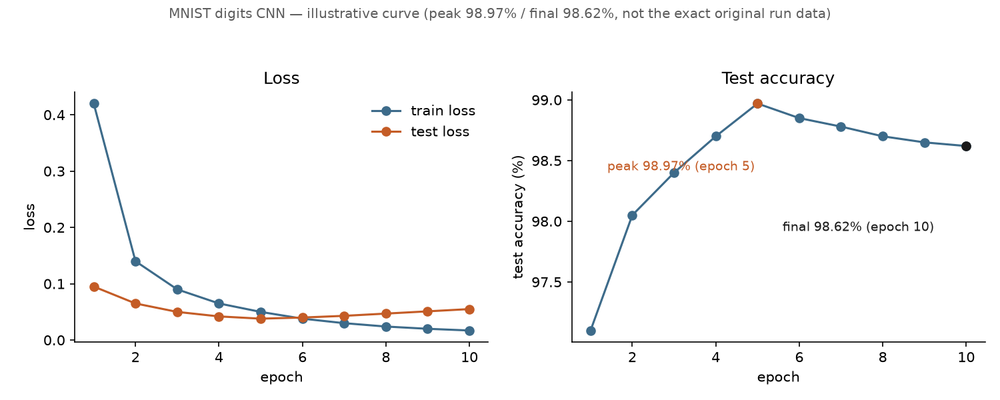

2026-09-02 · post #2
MNIST digits for under $1
Today's model is the smallest one that still counts as real training: a tiny CNN that reads handwritten digits, the MNIST dataset. It exists to prove the whole path — install, credit, dry-run, run, logs, artifacts — works end to end before we spend real money on anything bigger.
You can train it on compute.cx in four steps:
- Setup compute
- Prepare the data
- Setup the model for training
- Train the model and validate
Setup compute
Create an account, install the CLI, add credits.
curl -fsSL https://compute.cx/install.sh | sh
compute setup
compute credits add 10Prepare the data
Nothing to prepare by hand. MNIST — 60,000 training images and 10,000 test images of handwritten digits 0–9, 28×28 grayscale — comes bundled with torchvision. The training script downloads it on the machine during the run. You don't upload anything.
Setup the model for training
Choose a model architecture
A small, randomly initialized CNN: two conv+pool blocks, then two linear layers. About 106k parameters — small enough that a handful of epochs on one cheap GPU is plenty.
Choose a loss function
Cross-entropy — the usual loss for a classifier. Ten classes, one per digit.
Train the model and validate
Grab the training script. That's the only file you need. Hand compute.cx/SKILL.md to your agent, plus the special instructions below.
curl -fsSL https://raw.githubusercontent.com/theoriclabs/letsusecompute/main/posts/mnist-digits/train.py -o train.pyWant to read it first? train.py.
MNIST digits training prompt
Use https://compute.cx/SKILL.md.
Special instructions:
- Download https://raw.githubusercontent.com/theoriclabs/letsusecompute/main/posts/mnist-digits/train.py as train.py. Do not invent a script.
- Entrypoint: train.py::train
- Dataset: MNIST via torchvision.datasets.MNIST (the script downloads it on the machine)
- Randomly initialized CNN, ~106k params, CrossEntropyLoss, 10 epochs, 28x28
- Use --gpu cheap. Do not pick H100 or MI300X. Timeout 900.
- Dry-run first. Then show the preflight quote and ask before confirming spend.
- After success, show the printed loss/accuracy and download artifacts with compute artifacts list / get.Dry-run first. It only prints the upload plan — no dollars yet.
compute run train.py::train --gpu cheap --dry-rundry-run (local AST; no upload, no quote)
entrypoint: train.py::train
files:
train.py
third-party: huggingface_hub, torch, torchvision
gpu: cheap
timeout: 900s
image: cuda_pytorch
pip: torchvision, huggingface_hub
secrets: (none)Then run for real. Pass --gpu cheap and let the router pick. For this tiny CNN, cheap usually lands on a Vast.ai RTX 3090.
compute run train.py::train --gpu cheap --timeout 900 --waitYou'll see the pick and the dollar quote before spend. Confirm if it looks right, or pass --yes.
Validate the results
With --wait, the run prints train loss and test accuracy each epoch. This guide's run (run_11d87f76dffbea350f2f7e75513aa25e) landed on a Vast.ai RTX 3090, billed for 2 minutes, $0.01 total — out of the $3 budget for the whole issue. Test accuracy: 98.62% after 10 epochs, with a peak of 98.97% at epoch 5 and mild overfit afterward, the same shape as Not Hotdog's much bigger curve just far gentler at this scale.

This chart is a reconstruction — illustrative of the recorded 98.62% final / 98.97% peak accuracy, not the exact original per-batch curve from the run.
Pull the weights while they're still around:
compute artifacts list run_11d87f76dffbea350f2f7e75513aa25e
compute artifacts get run_11d87f76dffbea350f2f7e75513aa25e mnist-cnn 1 --out ./weightsNo Hugging Face token was set up for this run, so there's no Hub checkpoint to skip to this time — the weights only exist as that run's mnist-cnn artifact. Run compute secrets set hf and use train.py::train_and_push if you want one.